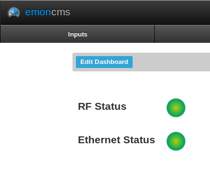

I've been making some changes to the emonCMS software to fit with what I want it to do. Some of the changes have also been requested by people, so I thought I would share the changes for others to use.
- Add led.js to Vis/Dashboard/widgets/led.js
- Overide dashboard_view.php in Views (make sure you backup the old file first )
- Override style.css in Views/theme/dark (make sure you backup the old file first)
- Override process_model.php in Models (make sure you backup the old file first)
First addition is the ability to draw a LED with different colours depending on the feed value.
To use this edit your dashboard and add the following line into your widget div definition
<div class="led" feed="feedname"></div>
Change feedname to the name of the feed that is an integer of a status you wish to display using the LED.
The feed value can be one of the following values. Next to teh value I have shown which colour LED will be shown
- 0 - Red
- 1 - Green
- 2 - Grey
- 3 - Blue
- 4 - Purple
- 5 - Yellow
- any Other value - Black
e.g. This is my JSON post command to create a green LED
http://192.168.1.200/powermon/api/post?apikey=ad08c02fa96c53f5a45073a84ca41f9c&json={led:0}
I created a feed from this input called LEDstatus which uses the Log to Feed process
The second addition is the ability to calculate the rate of change for a givern input.
To use this click on one of the inputs you wish to calculate the rate of change for.
Then create a new feed, choosing 'rate of change' as the Process and give it a feedname in the Arg column. Ensure that this is after your Log to Feed process. This process works by taking the current value and subtracting the previous value. This way you get the rate of change since your last measurement.
My plan is to use this new process to determine if a givern input has increased or decreased in value and is so by how much. So if I was to use the JSON api to get this rate of change I could feed it into growler or similar to notify me if a large power hungry device had suddenly turned itself on or off. Dont know how useful this will be yet.
Thanks
Nathan
Re: EmonCMS changes - Add draw_led and rate of change
Wow, this is great! Just copied in the files and it worked straight away!

Love the rate of change processor too!
can I update this to the github version?
Thanks a lot, Trystan
Re: EmonCMS changes - Add draw_led and rate of change
Yep add it if you feel the code is upto scratch
I think some the code can probably be tweaked, but appears to work.
Next task is to tie the rate of change into using the LED . i.e. a large rate increase will generate a red led and a large negative rate of change will generate a green LED.
Re: EmonCMS changes - Add draw_led and rate of change
Great, its now up on github and vis.openenergymonitor, I have added it to my dashboard to show if the solar hot water pump is on or off, take a look here http://openenergymonitor.org/emon/emoncms/showcase
Thanks a lot, its a great feature
Re: EmonCMS changes - Add draw_led and rate of change
Greetings,
I'm currently starting to use the LED widget, but by some reason there's seem to be appearing a "grey" frame arround my led. I've been looking at the code, but haven't managed to discover how to turn it transparent.
Can you help me?
Attaching a screenshot of my dashboard.
Thanks
Re: EmonCMS changes - Add draw_led and rate of change
How do I show the ethernet status and the RF module via LED like in the picture here ... ?
Thanks
Matthias
Re: EmonCMS changes - Add draw_led and rate of change
I can't seem to get rate of change to work for me. I've got a temperature input that updates every 60 seconds:
x 0.01 to get Celcius
Log to feed 'temperature' logging every 2 minutes.
Rate of change to feed 'Temperature Rate' logging every 10 minutes.
The problem is the Temerature Rate feed just stays inactive. I've tried this a few time with different parameters and can't work out what I'm dong wrong.